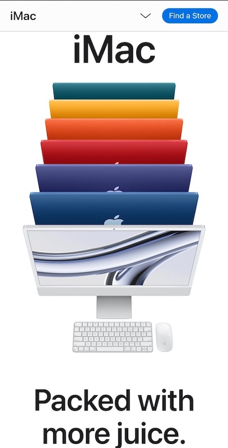

Rule of Thirds
Staak
Staak StudioThe main focus of the rule of thirds is to create a sense of flow due to its asymmetry. This image is positioned to occupy the four points of the intersection created by dividing the viewport into 9 cells with 4 intersection points at the center of the viewport. This webpage has successfully positioned the main attraction about these intersections.
Visual Hierarchy
Apple
Apple-iMac The visual hierarchy principle ensures that the visitor does not have a hard time figuring out where and what the interest on the page is. By laying out elements logically and strategically, the visitor is guided to take a desired action. The iMac is shown bigger than the other elements making it more prominent than the other items.
White Space
Flux
Flux-AcademyThe Whitespace principle is mainly implemented with the "Micro Whitespace", which refers to small instances of empty space, such as that between letters, lines of text, and grid images and, the "Macro Whitespace", which refers to the larger areas of empty space in a design that form the margins to the left and right of blog post amd articles. This webpage has exemplified it by leaving both micro and macro white spaces appropriately.